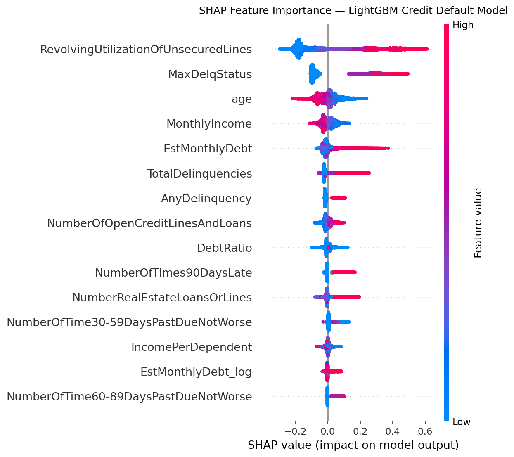
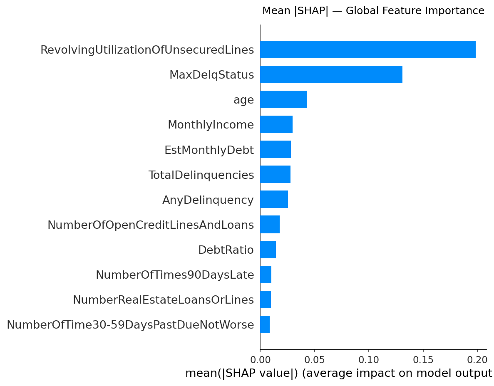
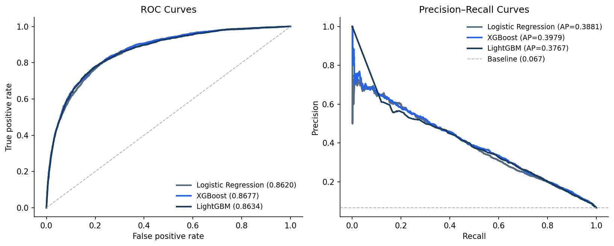
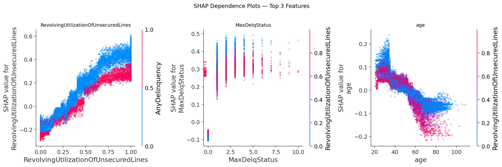
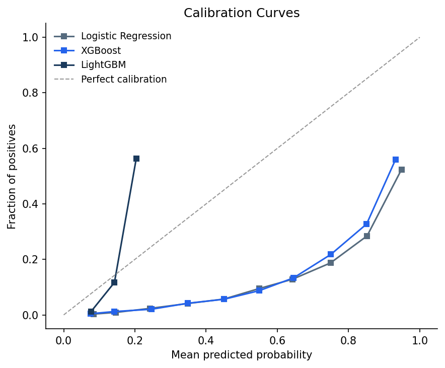
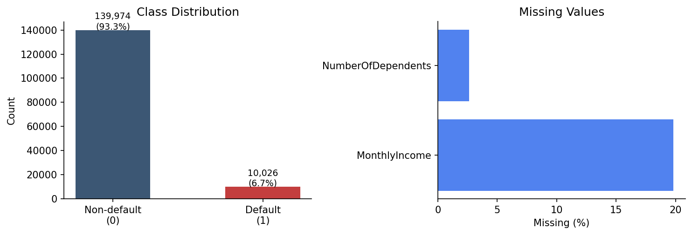

Key finding: Revolving credit utilisation (mean |SHAP| = 0.198) and maximum prior delinquency status (0.131) together account for the bulk of predictive signal — consistent with credit bureau practice and providing face-validity for the model. All three tree models are poorly calibrated; raw probabilities should not be used directly as default-rate thresholds without recalibration.
Credit scoring models underpin lending decisions for millions of borrowers, yet in many microfinance settings they operate as black boxes — lenders know the score but not the story behind it. This paper trains and compares three classifiers (Logistic Regression, XGBoost, and LightGBM) on the Give Me Some Credit consumer credit dataset (150,000 borrowers, 6.68% default rate) and applies SHAP (SHapley Additive exPlanations) to make the best-performing model's decisions transparent. All three classifiers perform within a narrow AUROC band of 0.862–0.868, with XGBoost leading marginally. The SHAP analysis reveals that revolving credit utilisation and maximum delinquency status together drive the bulk of predictive signal — consistent with established credit theory. Younger borrowers and those with lower incomes face systematically higher predicted default risk, while revolving utilisation shows a notable threshold effect near 0.5. We also find that all three tree models are poorly calibrated, with direct implications for threshold-based lending decisions. These results support SHAP-augmented gradient boosting as a practical, explainable credit scoring framework for microfinance lenders operating under regulatory transparency requirements.
| Model | AUROC | Gini | KS | AUPRC |
|---|---|---|---|---|
| XGBoost | 0.8677 | 0.7354 | 0.5806 | 0.3979 |
| LightGBM | 0.8634 | 0.7269 | 0.5783 | 0.3767 |
| Logistic Regression | 0.8620 | 0.7239 | 0.5724 | 0.3881 |
All three models are within 0.006 AUROC of each other — Logistic Regression trails XGBoost by only 0.006, suggesting lenders who prioritise interpretability can choose the linear model without material loss in discriminative power.






@misc{ouma2026credit,
title = {Explainable Credit Default Prediction for
Microfinance: {A} Gradient Boosting and
{SHAP} Study on Consumer Credit Data},
author = {Ouma, Craig Carlos},
year = {2026},
month = {June},
note = {Preprint},
url = {https://craigouma.github.io/credit-default/}
}